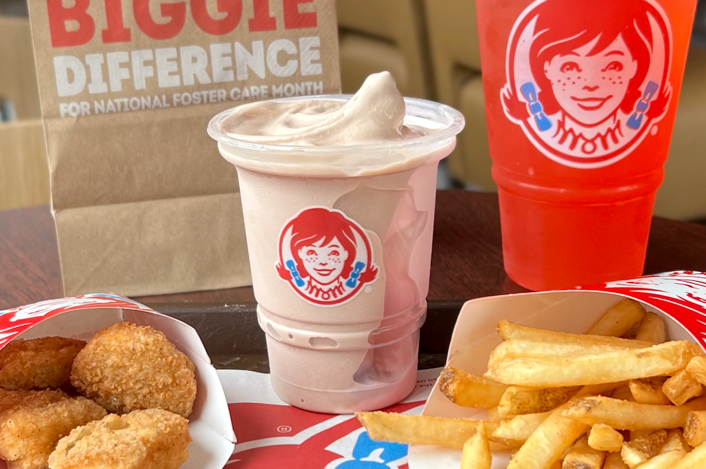

Wendys focuses on serving fresh high quality food for a fair price. They have a diverse menu, with breakfast items to lunch/dinner items. Wendy’s food is delicious, the frosty-fry combo, where you replace your drink with a frosty then dip your fries is one of the best things you can get from any fast food restaurant. Their fries and chicken are of higher quality than most other food chains, along with their square burger patties adding their own touch to the burgers. Other food chains serve food that tastes and looks fake. At wendys you feel like you're eating good quality food that won't leave your stomach turning and hurting at the end of the day. They have quick and friendly service, so your overall experience is pleasant.
